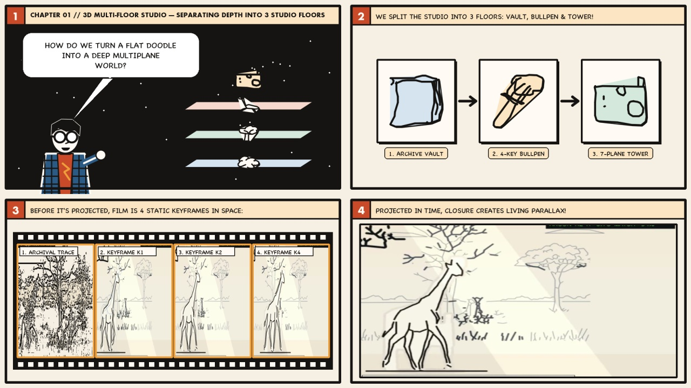
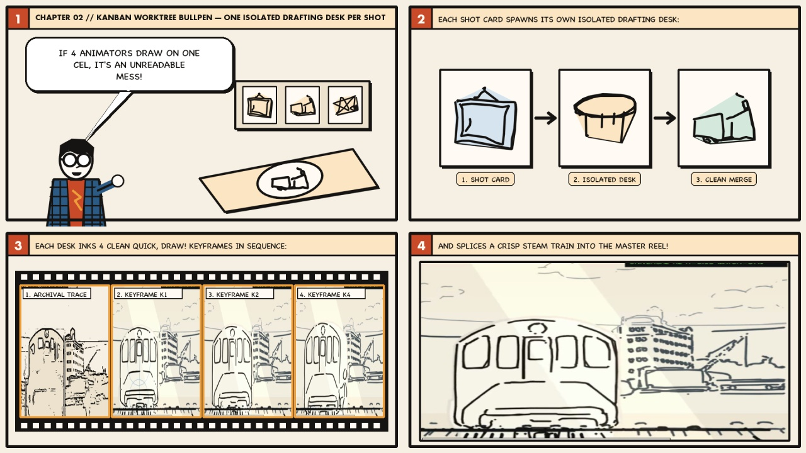
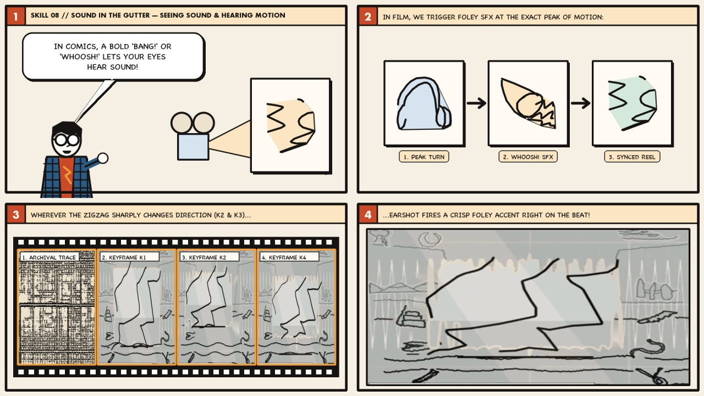
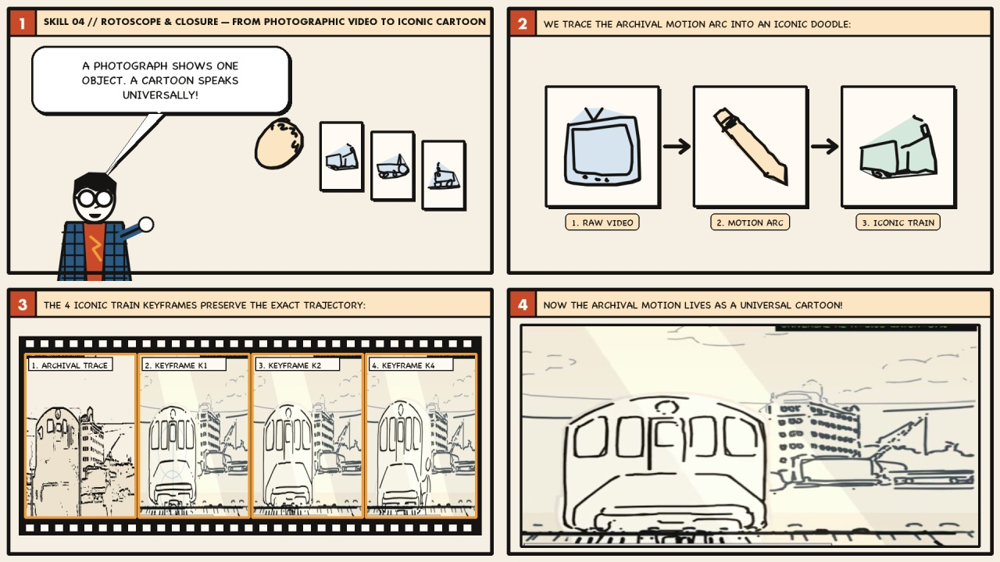

Behind the Scenes: Inside Our Multiplane Animation Studio & Soundstage
Welcome inside the architectural soundstage where all 346 Quick, Draw! multiplane cartoons were created. Combining the classic craft of a 1940s Burbank 7-Level Multiplane Camera Tower, an isometric Animator Drafting Bullpen with glowing circular onion-skin lightboxes, a Foley Soundstage & 35mm Dailies Screening Theatre, and a Brass Clocktower Optical Printer Lab with modern Multi-Agent Git Worktree Orchestration, this page features our Master Studio Documentary Film, an interactive soundstage canvas, and 18 bespoke studio soundstage films.
Plays all 18 Behind-the-Scenes Studio Soundstage Films back-to-back with projector hum, marimba beat cues, and Earshot Foley transients across our 4 hand-painted studio wings.
The 4 Architectural Wings of Our Multiplane Animation Studio

WING A // 7-PLANE TOWER & 3 FLOORS 7-level vertical Multiplane Camera rig, spiral stairs, Steenbeck 35mm vault, 2nd-floor bullpen, and 3rd-floor storyboard lounge.
WING B // LIGHTBOX BULLPEN & ARMATURE Four tilted wooden drafting desks with glowing frosted-glass lightboxes, brass peg bars, and Bouleau’s 14-line golden armature wall.
WING C // FOLEY PIT & SCREENING ROOM Hanging condenser boom mic, 3-surface Foley pit (wood/gravel/water), VU mixing console, and 35mm dailies screening theatre.
WING D // OPTICAL LAB & WORM PRISM Brass twin-reel rotoscope optical printer, 55-minute studio clockwork, cel paint apothecary shelves, and glowing 3D Worm cube.How Every Shot Flows Through the 4 Studio Rooms
Maestro + Lead Animator
Pins the archival Quick, Draw! reference and Bouleau’s 14-line golden composition strings before drawing a single cel.
Camera Op + Cel Inker
Traces the 4 keyframes (
K01..K04) in blue/red onion-skin pencil and paints all 7 gouache multiplane depth layers.
Auditor (Codex Reviewing Claude)
Projects the side-by-side archival & 7-plane film in the Screening Theatre to verify 16/16 gates and CLIP fidelity.
Merge Archivist + Earshot Foley
Syncs Foley pit footsteps/impacts to 3D Worm Jerk spikes and splices the finished reel onto the master canister.
10 Bespoke Behind-the-Scenes Studio Soundstage Films (“Make for Each” Studio Architecture)

8 Bespoke Behind-the-Scenes Studio Soundstage Films (“Make for Each” Video Director Skill)